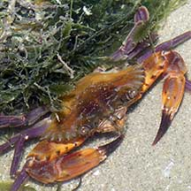
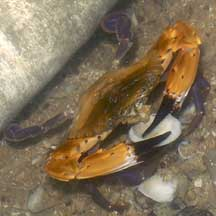
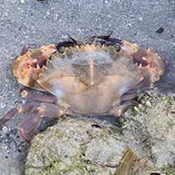

|
|
| crabs text index | photo index |
| Phylum Arthropoda > Subphylum Crustacea > Class Malacostraca > Order Decapoda > Brachyurans > Family Portunidae |
| Purple-legged
swimming crab Charybdis hellerii* Family Portunidae updated Oct 2016 Where seen? This swimming crab with purple legs is commonly seen on our Northern shores, rocky areas and rubble. Especially at night. Features: Body width 5-7cm. Body somewhat fan-shaped, the sides with 6 spines of equal size. The eyes are not very far apart. Last pair of legs are paddle-shaped and rotate like boat propellers, so the crab swims well in all directions. It is a fully marine crab and cannot live long out of water. Body smooth, colours various: yellowish, orange, olive with brownish patch near the eyes, often with a pair of white spots near the base. Walking legs purple. Pincers long orange with black pointed tips. |
 Pulau Sekudu, Jun 05 |
 6 spines on the side of the body. |
 Changi, Aug 05 |
| What does it eat? The crab has been seen eating other crabs and clams. |
 Eating another swimming crab. Changi, Aug 08 |
 Ate a clam? Tuas, Apr 05 |
 Mating crabs. Pulau Sekudu, May 04 |
*Species are difficult to positively identify without close examination.
On this website, they are grouped by external features for convenience of display.
| Purple-legged swimming crabs on Singapore shores |
On wildsingapore
flickr
|
| Other sightings on Singapore shores |
 Cyrene, Nov 24 Photo shared by Che Cheng Neo on facebook. |
|
Acknowledgements Grateful thanks to Crabhunter for confirmation of ID. Links
|